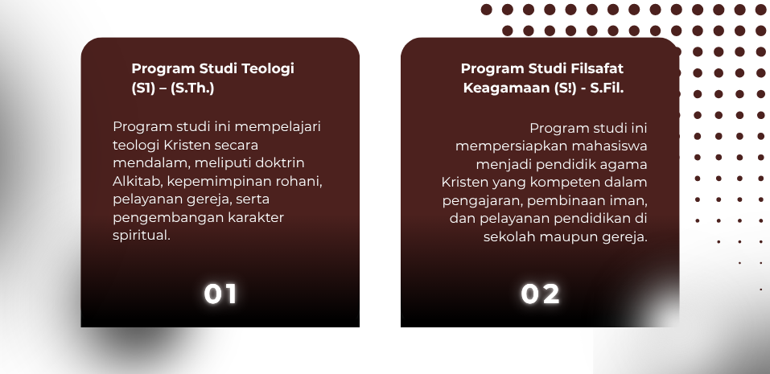

FAKULTAS FILSAFAT TEOLOGI
Fakultas Filsafat Teologi (FFT) adalah fakultas yang berfokus pada pengkajian:
- Ilmu Filsafat
- Ilmu Teologi (Ilmu Ketuhanan)
- Studi Alkitab dan kepemimpinan rohani
- Etika dan moralitas berbasis nilai Kristen Advent
Karena berada di bawah institusi “Advent”, maka secara teologis fakultas ini berafiliasi dengan ajaran Gereja Masehi Advent Hari Ketujuh.
PROGRAM STUDI

LATAR BELAKANG
Fakultas Filsafat Teologi (FFT) Universitas Advent Surya Nusantara didirikan untuk mempersiapkan mahasiswa menjadi pemimpin rohani, pelayan gereja, serta pendidik yang memiliki pemahaman teologis yang mendalam dan berlandaskan nilai-nilai iman Kristen.
Dalam menghadapi perkembangan zaman, gereja dan masyarakat membutuhkan sumber daya manusia yang tidak hanya memiliki pengetahuan teologi, tetapi juga kemampuan berpikir kritis, kepemimpinan rohani, serta integritas moral yang kuat.
Oleh karena itu, FFT hadir sebagai wadah pendidikan yang memadukan kajian akademik, pembinaan spiritual, serta pengembangan karakter untuk mempersiapkan lulusan yang siap melayani di gereja, lembaga pendidikan, maupun masyarakat luas.
VISI
Menjadi fakultas yang unggul dalam pengembangan ilmu filsafat dan teologi yang berlandaskan nilai-nilai iman Kristen Advent serta menghasilkan lulusan yang berintegritas, berkarakter rohani, dan siap melayani gereja serta masyarakat.
MISI
- Menyelenggarakan pendidikan dan pengajaran di bidang filsafat dan teologi.
- Mengembangkan pemahaman Alkitabiah yang mendalam bagi mahasiswa.
- Membentuk kepemimpinan rohani yang berintegritas.
- Mempersiapkan lulusan yang siap melayani gereja dan masyarakat.
ORGANISASI

HIMPUNAN MAHASISWA FAKULTAS FILSAFAT TEOLOGI
Himpunan Mahasiswa Fakultas Filsafat Teologi (HIMA FFT) adalah organisasi kemahasiswaan yang menjadi wadah pengembangan kepemimpinan, kebersamaan, dan pelayanan mahasiswa dalam kegiatan akademik, rohani, dan sosial.
Selengkapnya...
BERITA